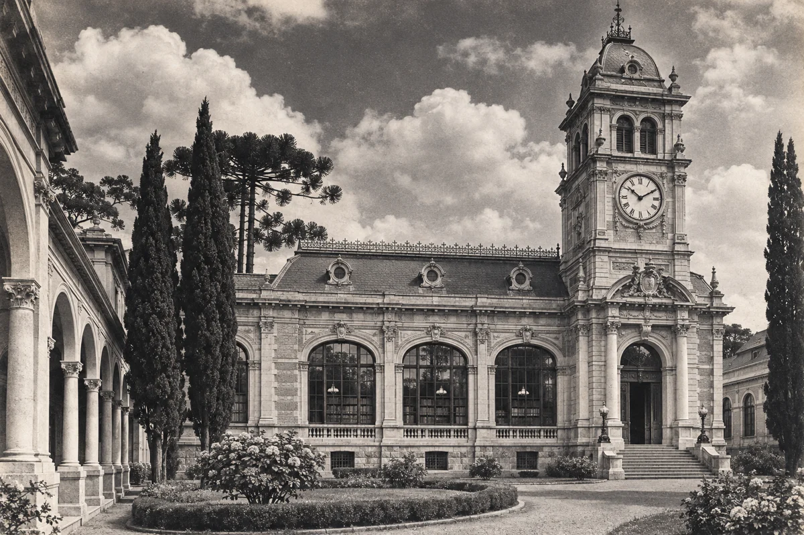
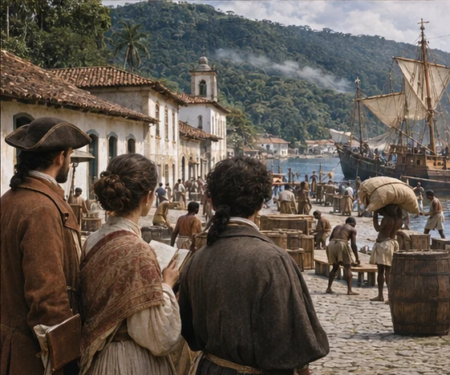

OBSERVATÓRIO DA TORRE / CURITIBA
Agentes
do tempo.
Aprenda a atravessar os séculos. Volte com uma história que as fontes possam sustentar.
01
Uma formação. Quatro destinos. Infinitas perguntas.

CIRCUITOS TEMPORAISOBSERVATÓRIO · 01
01 anode formação comum
04 destinospara escolher depois
100%baseado em fontes
INGRESSO · PRIMEIRO ANO
Antes do primeiro salto
Toda manhã começa no pátio. Entre corridas em equipe, leituras de arquivo e plantões no observatório, os cadetes aprendem a cuidar uns dos outros antes de escolher uma época.
CAMPO DE ESTUDOS
Escolha sua época
 Século I · Jesus em seu tempoGalileia e JudeiaConsultar missão ↗
Século I · Jesus em seu tempoGalileia e JudeiaConsultar missão ↗
Séculos XVI–XIX · Perto de vocêBrasil ColôniaConsultar missão ↗1939–1945 · Cinco perspectivasSegunda Guerra MundialConsultar missão ↗ Século XXII · Observatório do amanhãCuritiba em 2125Consultar missão ↗
Século XXII · Observatório do amanhãCuritiba em 2125Consultar missão ↗Nenhuma missão encontrada. Tente outro termo ou volte para todas.